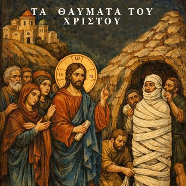

Τα Θαύματα του Χριστού
Ποιος είναι Αυτός που με μια λέξη ανασταίνει νεκρούς; Μέσα από τα θαύματά Του ο Ιησούς αποκαλύπτει την Θεότητά Του. Για όλα τα καλά παιδάκια...

Ποιος είναι Αυτός που με μια λέξη ανασταίνει νεκρούς; Μέσα από τα θαύματά Του ο Ιησούς αποκαλύπτει την Θεότητά Του. Για όλα τα καλά παιδάκια...